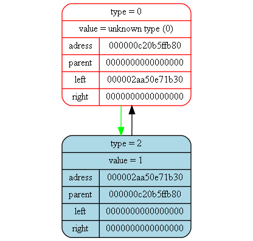

<pre>
<pre>

Tree dump from (int main()) at (main.cpp) at line (15):
tree [000000c20b5ffc10] "&func_tree" at (int main()) at (main.cpp)(12):
{
	status   = 1
	error    = 0
	size     = 9

	((((x)+(1))-(2))+((3)*(228)))
}
<pre>

Tree dump from (int GeneratePdf(Tree_t*)) at (dif.cpp) at line (199):
tree [000000c20b5ffb50] "&der_tree" at (int GeneratePdf(Tree_t*)) at (dif.cpp)(193):
{
	status   = 1
	error    = 0
	size     = 1

	(1)
}
